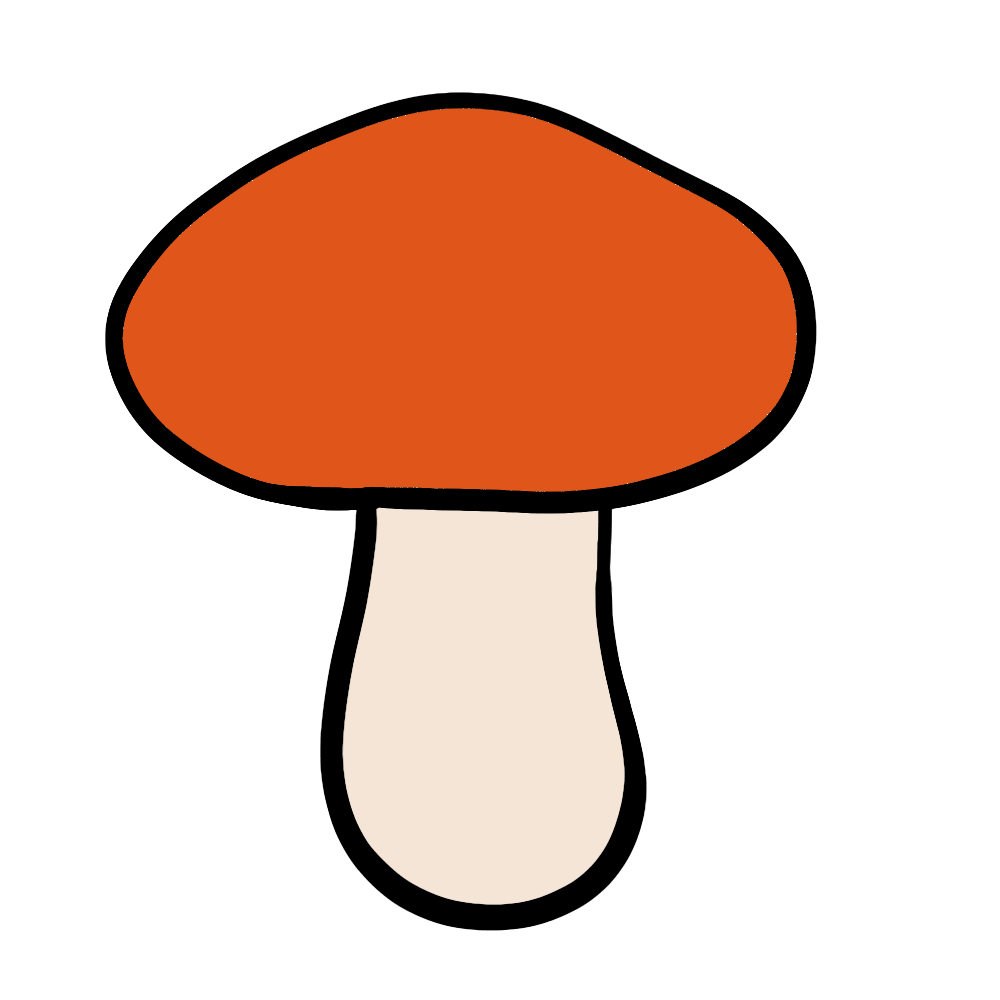

How to grow Mushrooms
A Step by step Guide
Button mushrooms are one of the most popular and widely consumed fungi. With the right setup and care, you can successfully cultivate them at home. Follow this guide to learn how to grow fresh and delicious button mushrooms.
Difficulty Rating: Moderate
Best Season to Grow: Year-Round (Indoors), Fall and Spring (Outdoors)
Can Be Grown: Both Indoors and Outdoors
Supplies Needed to Grow Mushrooms
Button mushroom spores or spawn
Growing medium (pasteurized compost, manure, or straw)
Sterile containers, trays, or growing bags
Spray bottle for misting
Dark, humid environment (such as a basement or closet)
Gloves (to prevent contamination)
Setting Up Your Mushroom Garden
Choosing the Right Location
Light: Button mushrooms do not require direct sunlight and grow best in low light or dark conditions.
Humidity: A high humidity environment (80-90%) is ideal for growth.
Temperature: Button mushrooms grow best between 13-18°C (55-65°F).
Indoor Setup: Use growing trays or containers in a dark, moist area such as a basement or closet.
Outdoor Setup: Prepare a compost or manure bed in a shady, damp area for outdoor cultivation.
Preparing the Soil
Use nutrient-rich compost or manure as the growing medium.
Pasteurize or sterilize the medium to eliminate contaminants.
Spread the growing medium evenly in trays or containers.
Planting Mushrooms
Mix the mushroom spawn into the prepared compost.
Keep the growing area humid and dark for proper mycelium colonization.
Wait for 2-4 weeks for the mycelium to fully colonize before exposing mushrooms to fruiting conditions.
Caring for Your Mushroom Plants

Watering
Mist the growing medium with a spray bottle to maintain moisture.
Avoid overwatering, as excessive moisture can lead to mold.

Temperature & Light
Keep the temperature consistent between 13-18°C (55-65°F).
Maintain low-light conditions for optimal growth.

Pest and Disease Prevention
Maintain sterile conditions to prevent contamination from mold or bacteria.
Use gloves when handling the growing medium.
Remove any discolored or moldy mushrooms immediately.

Harvesting
Button mushrooms are ready to harvest in 3-5 weeks.
Harvest when the caps are fully developed but before they open completely.
Gently twist and pull mushrooms from the substrate or cut them at the base.
Continue misting the medium to encourage multiple harvests.
By following these steps, you can successfully grow button mushrooms and enjoy fresh, homegrown fungi throughout the year. Happy growing! 🍄